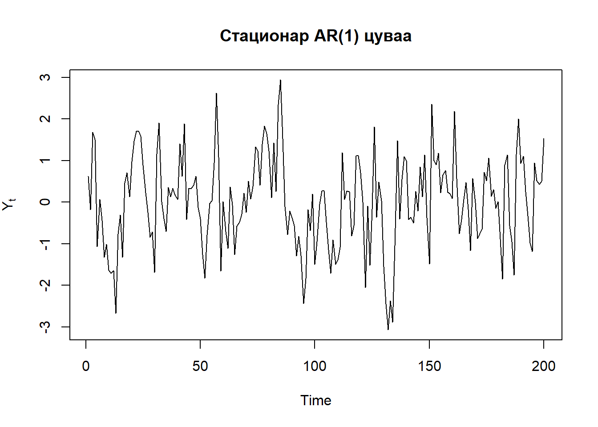
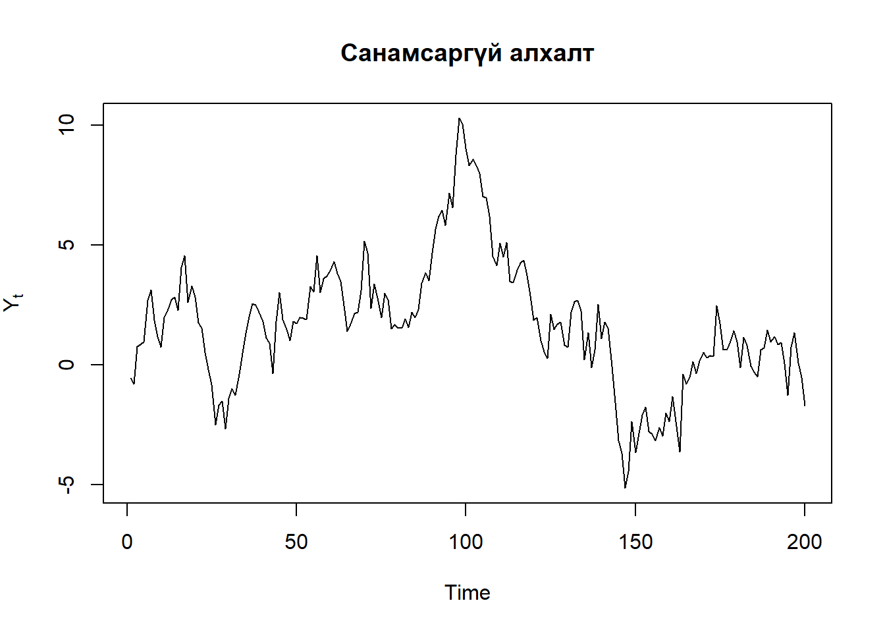
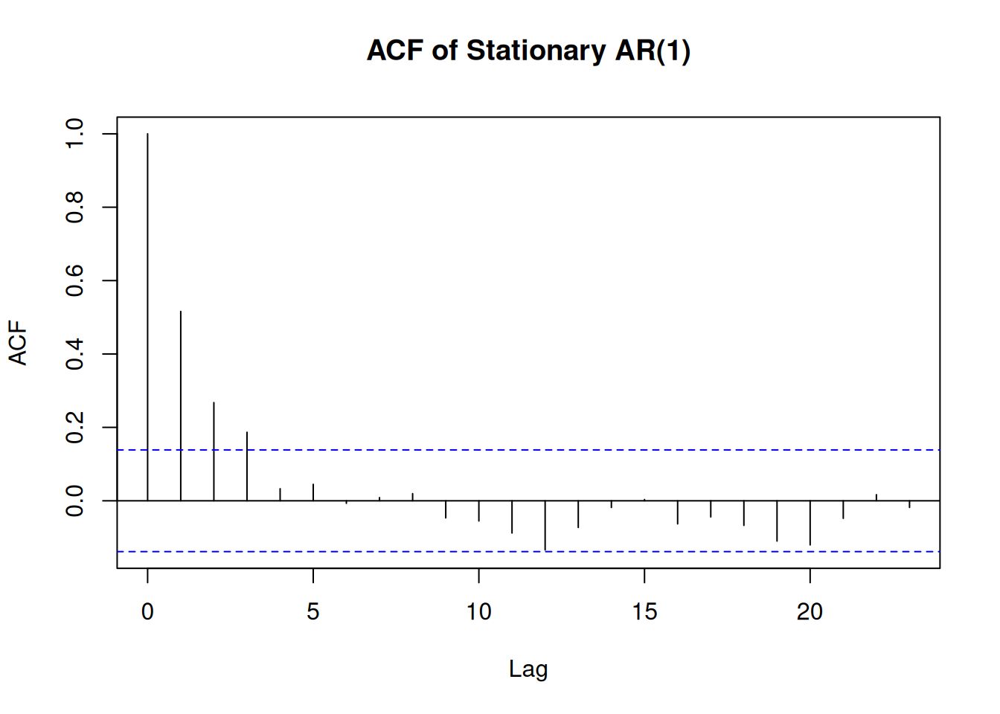
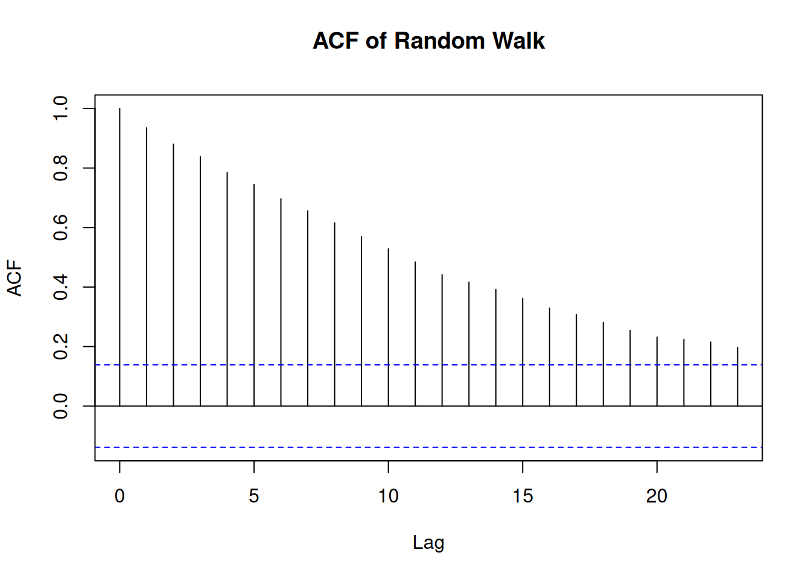

set.seed(123)
y <- arima.sim(
model = list(ar = 0.6),
n = 200
)
plot.ts(
y,
main = "Стационар AR(1) цуваа",
ylab = expression(Y[t])
)
Стационар байдал нь хугацааны цувааны шинжилгээний хамгийн чухал ойлголтуудын нэг юм.
Автокорреляцын шинжилгээ, AR загварууд, MA загварууд, ARMA загварууд зэрэг хугацааны цувааны олон статистик арга нь суурь процесс стационар байна гэж үздэг.
\[\{Y_t\}\] стохастик процессийг хатуу стационар гэнэ, хэрэв
\[ (Y_{t_1},Y_{t_2},\ldots,Y_{t_n}) \] -ийн хамтарсан тархалт нь бүх бүхэл \(h\) болон
\[ t_1,t_2,\ldots,t_n \]
хугацааны цэгүүдийн дурын олонлогийн хувьд
\[(Y_{t_1+h},Y_{t_2+h},\ldots,Y_{t_n+h})\]
-ийн хамтарсан тархалттай ижил байна.
Иймд процессийн магадлалын зан төлөв цаг хугацааны явцад өөрчлөгдөхгүй.
Практикт сул стационар байдлыг илүү их ашигладаг.
Процесс нь дараах нөхцлүүд биелбэл сул стационар байна.
\[ E(Y_t)=\mu \]
нь бүх \(t\)-ийн хувьд тогтмол.
\[ Var(Y_t)=\sigma^2 \]
нь бүх \(t\)-ийн хувьд тогтмол.
\[ Cov(Y_t,Y_{t-k}) \]
нь зөвхөн \(k\) хоцролтоос хамаарах бөгөөд \(t\) хугацаанаас хамаарахгүй.
Автоковариацын функц нь
\[ \gamma(k) = Cov(Y_t,Y_{t-k}). \]
Сул стационар процессийн хувьд
\[ \gamma(k) \]
нь зөвхөн \(k\)-ээс хамаарна.
Автокорреляцын функц (ACF) нь
\[ \rho(k) = \frac{\gamma(k)} {\gamma(0)}. \]
Учир нь
\[ \gamma(0)=Var(Y_t), \]
ACF нь \(k\) хоцролтоор тусгаарлагдсан ажиглалтуудын хоорондын хамаарлыг хэмждэг.
Цагаан чимээний процесс
\[ Y_t \sim WN(0,\sigma^2) \]
нь стационар, учир нь
\[ E(Y_t)=0, \]
\[ Var(Y_t)=\sigma^2, \]
ба
\[ Cov(Y_t,Y_{t-k})=0 \]
нь бүх \(k \neq 0\)-ийн хувьд биелнэ.
set.seed(123)
y <- arima.sim(
model = list(ar = 0.6),
n = 200
)
plot.ts(
y,
main = "Стационар AR(1) цуваа",
ylab = expression(Y[t])
)
Цуваа нь тогтмол дундажийн орчимд хэлбэлзэж, ойролцоогоор тогтмол дисперс харуулна.
Санамсаргүй алхалтыг авч үзье:
\[ Y_t = Y_{t-1} + \varepsilon_t, \]
энд
\[ \varepsilon_t \sim WN(0,\sigma^2). \]
set.seed(123)
e <- rnorm(200)
rw <- cumsum(e)
plot.ts(
rw,
main = "Санамсаргүй алхалт",
ylab = expression(Y[t])
)
Хувьсах байдал цаг хугацааны явцад нэмэгдэж, процесс тогтвортой дундажгүй байна.
Иймд санамсаргүй алхалт нь стационар бус байна.
acf(
y,
main = "Стационар AR(1)-ийн ACF"
)
acf(
rw,
main = "Санамсаргүй алхалтын ACF"
)
Санамсаргүй алхалт нь ихэвчлэн автокорреляцын функцэд маш удаан бууралт харуулдаг.
Сонгодог таамаглах загваруудын ихэнх нь стационар байдлыг шаарддаг.
Жишээнүүд:
Цуваа стационар бус үед дараах хувиргалтуудыг ихэвчлэн хэрэглэдэг:
Эдгээр хувиргалтыг загварчлахаас өмнө стационар цуваа гаргаж авахад ашигладаг.